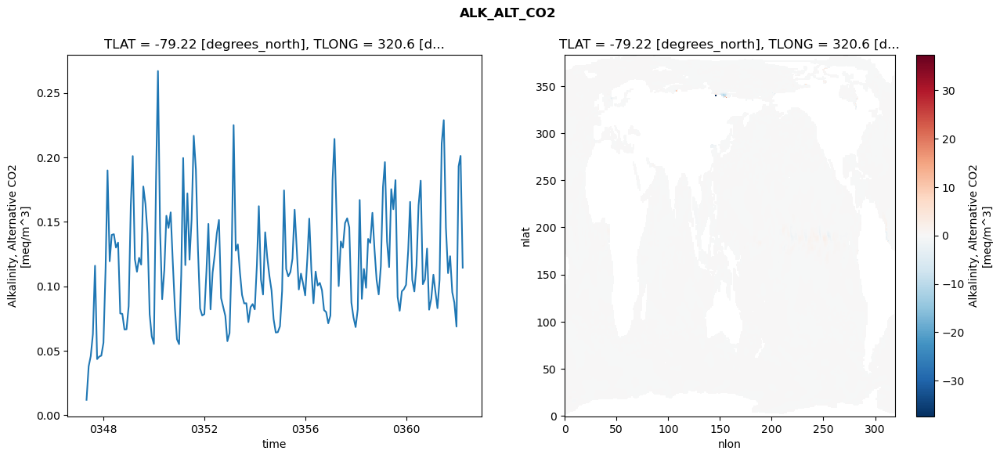
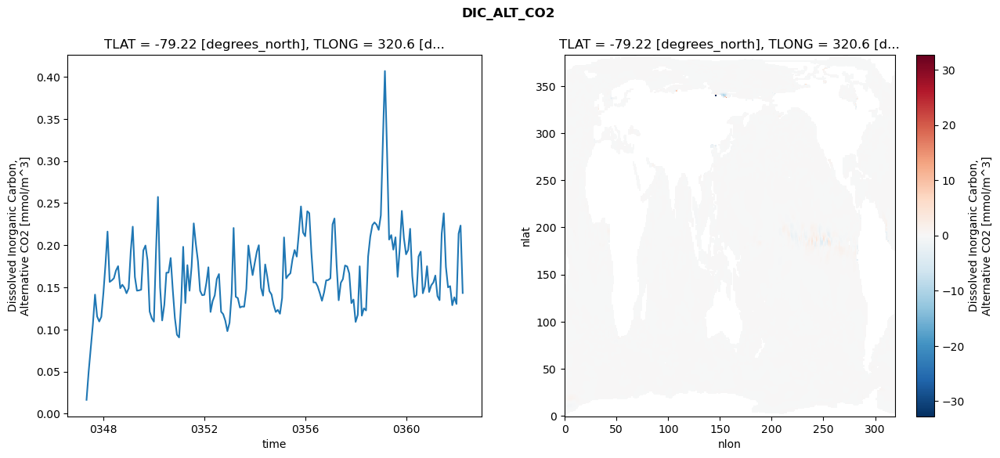
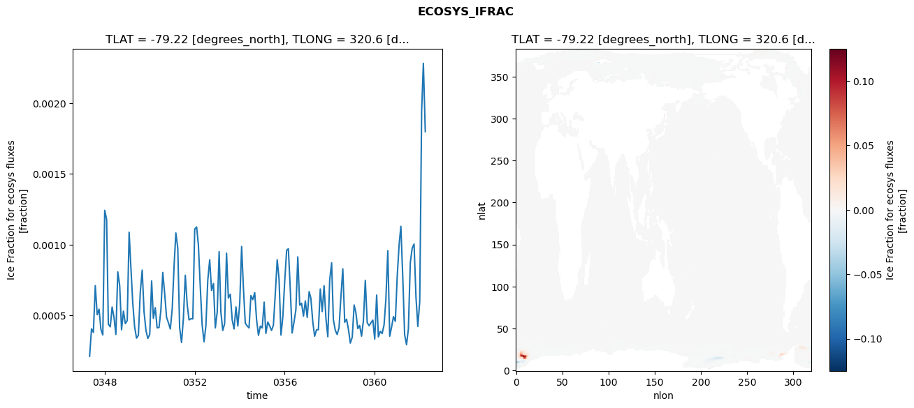
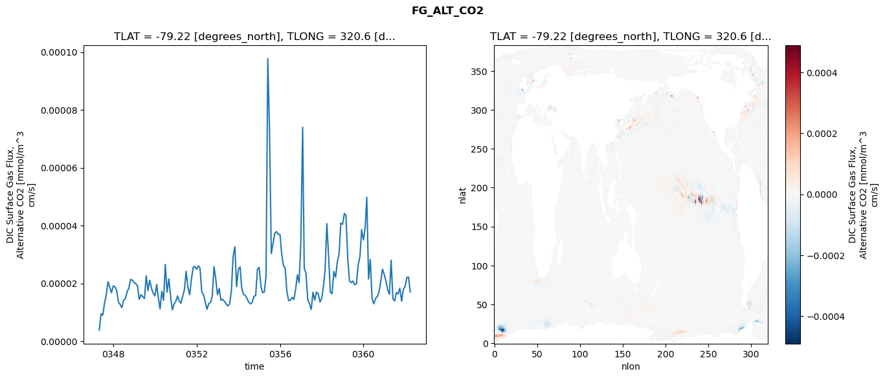

glb-dor_North_Atlantic_basin_004_1999-04-01_00017#
Simulation details#
Case: smyle.cdr-atlas-v0.glb-dor_North_Atlantic_basin_004_1999-04-01_00017.001
Basin: North_Atlantic_basin
Polygon: 4.0
Start date: 1999-04
Show code cell source Hide code cell source
import xarray as xr
import matplotlib.pyplot as plt
Show code cell source Hide code cell source
zarr_store = "/path/to/zarr/store"
# Parameters
zarr_store = "/global/cfs/projectdirs/m4746/Projects/Ocean-CDR-Atlas-v0/data/validation/smyle.cdr-atlas-v0.glb-dor_North_Atlantic_basin_004_1999-04-01_00017.001.validation.zarr"
Show code cell source Hide code cell source
%%time
ds_o = xr.open_zarr(zarr_store).compute()
ds_o
CPU times: user 629 ms, sys: 510 ms, total: 1.14 s
Wall time: 1.47 s
<xarray.Dataset> Size: 2MB
Dimensions: (nlat: 384, nlon: 320, time: 180)
Coordinates:
TLAT float64 8B -79.22
TLONG float64 8B 320.6
ULAT float64 8B -78.95
ULONG float64 8B 321.1
* time (time) object 1kB 0347-05-01 00:00:00 ... 0362-04-01 0...
z_t float32 4B 500.0
Dimensions without coordinates: nlat, nlon
Data variables:
ALK_ALT_CO2_diff (nlat, nlon) float32 492kB nan nan nan ... nan nan nan
ALK_ALT_CO2_rmse (time) float64 1kB 0.01195 0.03792 ... 0.2011 0.1144
DIC_ALT_CO2_diff (nlat, nlon) float32 492kB nan nan nan ... nan nan nan
DIC_ALT_CO2_rmse (time) float64 1kB 0.01641 0.05007 ... 0.2233 0.1433
ECOSYS_IFRAC_diff (nlat, nlon) float32 492kB nan nan nan ... nan nan nan
ECOSYS_IFRAC_rmse (time) float64 1kB 0.0002101 0.0004038 ... 0.0018
FG_ALT_CO2_diff (nlat, nlon) float32 492kB nan nan nan ... nan nan nan
FG_ALT_CO2_rmse (time) float64 1kB 3.873e-06 9.478e-06 ... 1.7e-05xarray.Dataset
- nlat: 384
- nlon: 320
- time: 180
- TLAT()float64-79.22
- long_name :
- array of t-grid latitudes
- units :
- degrees_north
array(-79.22052261)
- TLONG()float64320.6
- long_name :
- array of t-grid longitudes
- units :
- degrees_east
array(320.56250892)
- ULAT()float64-78.95
- long_name :
- array of u-grid latitudes
- units :
- degrees_north
array(-78.95289509)
- ULONG()float64321.1
- long_name :
- array of u-grid longitudes
- units :
- degrees_east
array(321.12500894)
- time(time)object0347-05-01 00:00:00 ... 0362-04-...
- bounds :
- time_bound
- long_name :
- time
array([cftime.DatetimeNoLeap(347, 5, 1, 0, 0, 0, 0, has_year_zero=True), cftime.DatetimeNoLeap(347, 6, 1, 0, 0, 0, 0, has_year_zero=True), cftime.DatetimeNoLeap(347, 7, 1, 0, 0, 0, 0, has_year_zero=True), cftime.DatetimeNoLeap(347, 8, 1, 0, 0, 0, 0, has_year_zero=True), cftime.DatetimeNoLeap(347, 9, 1, 0, 0, 0, 0, has_year_zero=True), cftime.DatetimeNoLeap(347, 10, 1, 0, 0, 0, 0, has_year_zero=True), cftime.DatetimeNoLeap(347, 11, 1, 0, 0, 0, 0, has_year_zero=True), cftime.DatetimeNoLeap(347, 12, 1, 0, 0, 0, 0, has_year_zero=True), cftime.DatetimeNoLeap(348, 1, 1, 0, 0, 0, 0, has_year_zero=True), cftime.DatetimeNoLeap(348, 2, 1, 0, 0, 0, 0, has_year_zero=True), cftime.DatetimeNoLeap(348, 3, 1, 0, 0, 0, 0, has_year_zero=True), cftime.DatetimeNoLeap(348, 4, 1, 0, 0, 0, 0, has_year_zero=True), cftime.DatetimeNoLeap(348, 5, 1, 0, 0, 0, 0, has_year_zero=True), cftime.DatetimeNoLeap(348, 6, 1, 0, 0, 0, 0, has_year_zero=True), cftime.DatetimeNoLeap(348, 7, 1, 0, 0, 0, 0, has_year_zero=True), cftime.DatetimeNoLeap(348, 8, 1, 0, 0, 0, 0, has_year_zero=True), cftime.DatetimeNoLeap(348, 9, 1, 0, 0, 0, 0, has_year_zero=True), cftime.DatetimeNoLeap(348, 10, 1, 0, 0, 0, 0, has_year_zero=True), cftime.DatetimeNoLeap(348, 11, 1, 0, 0, 0, 0, has_year_zero=True), cftime.DatetimeNoLeap(348, 12, 1, 0, 0, 0, 0, has_year_zero=True), cftime.DatetimeNoLeap(349, 1, 1, 0, 0, 0, 0, has_year_zero=True), cftime.DatetimeNoLeap(349, 2, 1, 0, 0, 0, 0, has_year_zero=True), cftime.DatetimeNoLeap(349, 3, 1, 0, 0, 0, 0, has_year_zero=True), cftime.DatetimeNoLeap(349, 4, 1, 0, 0, 0, 0, has_year_zero=True), cftime.DatetimeNoLeap(349, 5, 1, 0, 0, 0, 0, has_year_zero=True), cftime.DatetimeNoLeap(349, 6, 1, 0, 0, 0, 0, has_year_zero=True), cftime.DatetimeNoLeap(349, 7, 1, 0, 0, 0, 0, has_year_zero=True), cftime.DatetimeNoLeap(349, 8, 1, 0, 0, 0, 0, has_year_zero=True), cftime.DatetimeNoLeap(349, 9, 1, 0, 0, 0, 0, has_year_zero=True), cftime.DatetimeNoLeap(349, 10, 1, 0, 0, 0, 0, has_year_zero=True), cftime.DatetimeNoLeap(349, 11, 1, 0, 0, 0, 0, has_year_zero=True), cftime.DatetimeNoLeap(349, 12, 1, 0, 0, 0, 0, has_year_zero=True), cftime.DatetimeNoLeap(350, 1, 1, 0, 0, 0, 0, has_year_zero=True), cftime.DatetimeNoLeap(350, 2, 1, 0, 0, 0, 0, has_year_zero=True), cftime.DatetimeNoLeap(350, 3, 1, 0, 0, 0, 0, has_year_zero=True), cftime.DatetimeNoLeap(350, 4, 1, 0, 0, 0, 0, has_year_zero=True), cftime.DatetimeNoLeap(350, 5, 1, 0, 0, 0, 0, has_year_zero=True), cftime.DatetimeNoLeap(350, 6, 1, 0, 0, 0, 0, has_year_zero=True), cftime.DatetimeNoLeap(350, 7, 1, 0, 0, 0, 0, has_year_zero=True), cftime.DatetimeNoLeap(350, 8, 1, 0, 0, 0, 0, has_year_zero=True), cftime.DatetimeNoLeap(350, 9, 1, 0, 0, 0, 0, has_year_zero=True), cftime.DatetimeNoLeap(350, 10, 1, 0, 0, 0, 0, has_year_zero=True), cftime.DatetimeNoLeap(350, 11, 1, 0, 0, 0, 0, has_year_zero=True), cftime.DatetimeNoLeap(350, 12, 1, 0, 0, 0, 0, has_year_zero=True), cftime.DatetimeNoLeap(351, 1, 1, 0, 0, 0, 0, has_year_zero=True), cftime.DatetimeNoLeap(351, 2, 1, 0, 0, 0, 0, has_year_zero=True), cftime.DatetimeNoLeap(351, 3, 1, 0, 0, 0, 0, has_year_zero=True), cftime.DatetimeNoLeap(351, 4, 1, 0, 0, 0, 0, has_year_zero=True), cftime.DatetimeNoLeap(351, 5, 1, 0, 0, 0, 0, has_year_zero=True), cftime.DatetimeNoLeap(351, 6, 1, 0, 0, 0, 0, has_year_zero=True), cftime.DatetimeNoLeap(351, 7, 1, 0, 0, 0, 0, has_year_zero=True), cftime.DatetimeNoLeap(351, 8, 1, 0, 0, 0, 0, has_year_zero=True), cftime.DatetimeNoLeap(351, 9, 1, 0, 0, 0, 0, has_year_zero=True), cftime.DatetimeNoLeap(351, 10, 1, 0, 0, 0, 0, has_year_zero=True), cftime.DatetimeNoLeap(351, 11, 1, 0, 0, 0, 0, has_year_zero=True), cftime.DatetimeNoLeap(351, 12, 1, 0, 0, 0, 0, has_year_zero=True), cftime.DatetimeNoLeap(352, 1, 1, 0, 0, 0, 0, has_year_zero=True), cftime.DatetimeNoLeap(352, 2, 1, 0, 0, 0, 0, has_year_zero=True), cftime.DatetimeNoLeap(352, 3, 1, 0, 0, 0, 0, has_year_zero=True), cftime.DatetimeNoLeap(352, 4, 1, 0, 0, 0, 0, has_year_zero=True), cftime.DatetimeNoLeap(352, 5, 1, 0, 0, 0, 0, has_year_zero=True), cftime.DatetimeNoLeap(352, 6, 1, 0, 0, 0, 0, has_year_zero=True), cftime.DatetimeNoLeap(352, 7, 1, 0, 0, 0, 0, has_year_zero=True), cftime.DatetimeNoLeap(352, 8, 1, 0, 0, 0, 0, has_year_zero=True), cftime.DatetimeNoLeap(352, 9, 1, 0, 0, 0, 0, has_year_zero=True), cftime.DatetimeNoLeap(352, 10, 1, 0, 0, 0, 0, has_year_zero=True), cftime.DatetimeNoLeap(352, 11, 1, 0, 0, 0, 0, has_year_zero=True), cftime.DatetimeNoLeap(352, 12, 1, 0, 0, 0, 0, has_year_zero=True), cftime.DatetimeNoLeap(353, 1, 1, 0, 0, 0, 0, has_year_zero=True), cftime.DatetimeNoLeap(353, 2, 1, 0, 0, 0, 0, has_year_zero=True), cftime.DatetimeNoLeap(353, 3, 1, 0, 0, 0, 0, has_year_zero=True), cftime.DatetimeNoLeap(353, 4, 1, 0, 0, 0, 0, has_year_zero=True), cftime.DatetimeNoLeap(353, 5, 1, 0, 0, 0, 0, has_year_zero=True), cftime.DatetimeNoLeap(353, 6, 1, 0, 0, 0, 0, has_year_zero=True), cftime.DatetimeNoLeap(353, 7, 1, 0, 0, 0, 0, has_year_zero=True), cftime.DatetimeNoLeap(353, 8, 1, 0, 0, 0, 0, has_year_zero=True), cftime.DatetimeNoLeap(353, 9, 1, 0, 0, 0, 0, has_year_zero=True), cftime.DatetimeNoLeap(353, 10, 1, 0, 0, 0, 0, has_year_zero=True), cftime.DatetimeNoLeap(353, 11, 1, 0, 0, 0, 0, has_year_zero=True), cftime.DatetimeNoLeap(353, 12, 1, 0, 0, 0, 0, has_year_zero=True), cftime.DatetimeNoLeap(354, 1, 1, 0, 0, 0, 0, has_year_zero=True), cftime.DatetimeNoLeap(354, 2, 1, 0, 0, 0, 0, has_year_zero=True), cftime.DatetimeNoLeap(354, 3, 1, 0, 0, 0, 0, has_year_zero=True), cftime.DatetimeNoLeap(354, 4, 1, 0, 0, 0, 0, has_year_zero=True), cftime.DatetimeNoLeap(354, 5, 1, 0, 0, 0, 0, has_year_zero=True), cftime.DatetimeNoLeap(354, 6, 1, 0, 0, 0, 0, has_year_zero=True), cftime.DatetimeNoLeap(354, 7, 1, 0, 0, 0, 0, has_year_zero=True), cftime.DatetimeNoLeap(354, 8, 1, 0, 0, 0, 0, has_year_zero=True), cftime.DatetimeNoLeap(354, 9, 1, 0, 0, 0, 0, has_year_zero=True), cftime.DatetimeNoLeap(354, 10, 1, 0, 0, 0, 0, has_year_zero=True), cftime.DatetimeNoLeap(354, 11, 1, 0, 0, 0, 0, has_year_zero=True), cftime.DatetimeNoLeap(354, 12, 1, 0, 0, 0, 0, has_year_zero=True), cftime.DatetimeNoLeap(355, 1, 1, 0, 0, 0, 0, has_year_zero=True), cftime.DatetimeNoLeap(355, 2, 1, 0, 0, 0, 0, has_year_zero=True), cftime.DatetimeNoLeap(355, 3, 1, 0, 0, 0, 0, has_year_zero=True), cftime.DatetimeNoLeap(355, 4, 1, 0, 0, 0, 0, has_year_zero=True), cftime.DatetimeNoLeap(355, 5, 1, 0, 0, 0, 0, has_year_zero=True), cftime.DatetimeNoLeap(355, 6, 1, 0, 0, 0, 0, has_year_zero=True), cftime.DatetimeNoLeap(355, 7, 1, 0, 0, 0, 0, has_year_zero=True), cftime.DatetimeNoLeap(355, 8, 1, 0, 0, 0, 0, has_year_zero=True), cftime.DatetimeNoLeap(355, 9, 1, 0, 0, 0, 0, has_year_zero=True), cftime.DatetimeNoLeap(355, 10, 1, 0, 0, 0, 0, has_year_zero=True), cftime.DatetimeNoLeap(355, 11, 1, 0, 0, 0, 0, has_year_zero=True), cftime.DatetimeNoLeap(355, 12, 1, 0, 0, 0, 0, has_year_zero=True), cftime.DatetimeNoLeap(356, 1, 1, 0, 0, 0, 0, has_year_zero=True), cftime.DatetimeNoLeap(356, 2, 1, 0, 0, 0, 0, has_year_zero=True), cftime.DatetimeNoLeap(356, 3, 1, 0, 0, 0, 0, has_year_zero=True), cftime.DatetimeNoLeap(356, 4, 1, 0, 0, 0, 0, has_year_zero=True), cftime.DatetimeNoLeap(356, 5, 1, 0, 0, 0, 0, has_year_zero=True), cftime.DatetimeNoLeap(356, 6, 1, 0, 0, 0, 0, has_year_zero=True), cftime.DatetimeNoLeap(356, 7, 1, 0, 0, 0, 0, has_year_zero=True), cftime.DatetimeNoLeap(356, 8, 1, 0, 0, 0, 0, has_year_zero=True), cftime.DatetimeNoLeap(356, 9, 1, 0, 0, 0, 0, has_year_zero=True), cftime.DatetimeNoLeap(356, 10, 1, 0, 0, 0, 0, has_year_zero=True), cftime.DatetimeNoLeap(356, 11, 1, 0, 0, 0, 0, has_year_zero=True), cftime.DatetimeNoLeap(356, 12, 1, 0, 0, 0, 0, has_year_zero=True), cftime.DatetimeNoLeap(357, 1, 1, 0, 0, 0, 0, has_year_zero=True), cftime.DatetimeNoLeap(357, 2, 1, 0, 0, 0, 0, has_year_zero=True), cftime.DatetimeNoLeap(357, 3, 1, 0, 0, 0, 0, has_year_zero=True), cftime.DatetimeNoLeap(357, 4, 1, 0, 0, 0, 0, has_year_zero=True), cftime.DatetimeNoLeap(357, 5, 1, 0, 0, 0, 0, has_year_zero=True), cftime.DatetimeNoLeap(357, 6, 1, 0, 0, 0, 0, has_year_zero=True), cftime.DatetimeNoLeap(357, 7, 1, 0, 0, 0, 0, has_year_zero=True), cftime.DatetimeNoLeap(357, 8, 1, 0, 0, 0, 0, has_year_zero=True), cftime.DatetimeNoLeap(357, 9, 1, 0, 0, 0, 0, has_year_zero=True), cftime.DatetimeNoLeap(357, 10, 1, 0, 0, 0, 0, has_year_zero=True), cftime.DatetimeNoLeap(357, 11, 1, 0, 0, 0, 0, has_year_zero=True), cftime.DatetimeNoLeap(357, 12, 1, 0, 0, 0, 0, has_year_zero=True), cftime.DatetimeNoLeap(358, 1, 1, 0, 0, 0, 0, has_year_zero=True), cftime.DatetimeNoLeap(358, 2, 1, 0, 0, 0, 0, has_year_zero=True), cftime.DatetimeNoLeap(358, 3, 1, 0, 0, 0, 0, has_year_zero=True), cftime.DatetimeNoLeap(358, 4, 1, 0, 0, 0, 0, has_year_zero=True), cftime.DatetimeNoLeap(358, 5, 1, 0, 0, 0, 0, has_year_zero=True), cftime.DatetimeNoLeap(358, 6, 1, 0, 0, 0, 0, has_year_zero=True), cftime.DatetimeNoLeap(358, 7, 1, 0, 0, 0, 0, has_year_zero=True), cftime.DatetimeNoLeap(358, 8, 1, 0, 0, 0, 0, has_year_zero=True), cftime.DatetimeNoLeap(358, 9, 1, 0, 0, 0, 0, has_year_zero=True), cftime.DatetimeNoLeap(358, 10, 1, 0, 0, 0, 0, has_year_zero=True), cftime.DatetimeNoLeap(358, 11, 1, 0, 0, 0, 0, has_year_zero=True), cftime.DatetimeNoLeap(358, 12, 1, 0, 0, 0, 0, has_year_zero=True), cftime.DatetimeNoLeap(359, 1, 1, 0, 0, 0, 0, has_year_zero=True), cftime.DatetimeNoLeap(359, 2, 1, 0, 0, 0, 0, has_year_zero=True), cftime.DatetimeNoLeap(359, 3, 1, 0, 0, 0, 0, has_year_zero=True), cftime.DatetimeNoLeap(359, 4, 1, 0, 0, 0, 0, has_year_zero=True), cftime.DatetimeNoLeap(359, 5, 1, 0, 0, 0, 0, has_year_zero=True), cftime.DatetimeNoLeap(359, 6, 1, 0, 0, 0, 0, has_year_zero=True), cftime.DatetimeNoLeap(359, 7, 1, 0, 0, 0, 0, has_year_zero=True), cftime.DatetimeNoLeap(359, 8, 1, 0, 0, 0, 0, has_year_zero=True), cftime.DatetimeNoLeap(359, 9, 1, 0, 0, 0, 0, has_year_zero=True), cftime.DatetimeNoLeap(359, 10, 1, 0, 0, 0, 0, has_year_zero=True), cftime.DatetimeNoLeap(359, 11, 1, 0, 0, 0, 0, has_year_zero=True), cftime.DatetimeNoLeap(359, 12, 1, 0, 0, 0, 0, has_year_zero=True), cftime.DatetimeNoLeap(360, 1, 1, 0, 0, 0, 0, has_year_zero=True), cftime.DatetimeNoLeap(360, 2, 1, 0, 0, 0, 0, has_year_zero=True), cftime.DatetimeNoLeap(360, 3, 1, 0, 0, 0, 0, has_year_zero=True), cftime.DatetimeNoLeap(360, 4, 1, 0, 0, 0, 0, has_year_zero=True), cftime.DatetimeNoLeap(360, 5, 1, 0, 0, 0, 0, has_year_zero=True), cftime.DatetimeNoLeap(360, 6, 1, 0, 0, 0, 0, has_year_zero=True), cftime.DatetimeNoLeap(360, 7, 1, 0, 0, 0, 0, has_year_zero=True), cftime.DatetimeNoLeap(360, 8, 1, 0, 0, 0, 0, has_year_zero=True), cftime.DatetimeNoLeap(360, 9, 1, 0, 0, 0, 0, has_year_zero=True), cftime.DatetimeNoLeap(360, 10, 1, 0, 0, 0, 0, has_year_zero=True), cftime.DatetimeNoLeap(360, 11, 1, 0, 0, 0, 0, has_year_zero=True), cftime.DatetimeNoLeap(360, 12, 1, 0, 0, 0, 0, has_year_zero=True), cftime.DatetimeNoLeap(361, 1, 1, 0, 0, 0, 0, has_year_zero=True), cftime.DatetimeNoLeap(361, 2, 1, 0, 0, 0, 0, has_year_zero=True), cftime.DatetimeNoLeap(361, 3, 1, 0, 0, 0, 0, has_year_zero=True), cftime.DatetimeNoLeap(361, 4, 1, 0, 0, 0, 0, has_year_zero=True), cftime.DatetimeNoLeap(361, 5, 1, 0, 0, 0, 0, has_year_zero=True), cftime.DatetimeNoLeap(361, 6, 1, 0, 0, 0, 0, has_year_zero=True), cftime.DatetimeNoLeap(361, 7, 1, 0, 0, 0, 0, has_year_zero=True), cftime.DatetimeNoLeap(361, 8, 1, 0, 0, 0, 0, has_year_zero=True), cftime.DatetimeNoLeap(361, 9, 1, 0, 0, 0, 0, has_year_zero=True), cftime.DatetimeNoLeap(361, 10, 1, 0, 0, 0, 0, has_year_zero=True), cftime.DatetimeNoLeap(361, 11, 1, 0, 0, 0, 0, has_year_zero=True), cftime.DatetimeNoLeap(361, 12, 1, 0, 0, 0, 0, has_year_zero=True), cftime.DatetimeNoLeap(362, 1, 1, 0, 0, 0, 0, has_year_zero=True), cftime.DatetimeNoLeap(362, 2, 1, 0, 0, 0, 0, has_year_zero=True), cftime.DatetimeNoLeap(362, 3, 1, 0, 0, 0, 0, has_year_zero=True), cftime.DatetimeNoLeap(362, 4, 1, 0, 0, 0, 0, has_year_zero=True)], dtype=object) - z_t()float32500.0
- long_name :
- depth from surface to midpoint of layer
- positive :
- down
- units :
- centimeters
- valid_max :
- 537500.0
- valid_min :
- 500.0
array(500., dtype=float32)
- ALK_ALT_CO2_diff(nlat, nlon)float32nan nan nan nan ... nan nan nan nan
- cell_methods :
- time: mean
- grid_loc :
- 3111
- long_name :
- Alkalinity, Alternative CO2
- units :
- meq/m^3
array([[ nan, nan, nan, ..., nan, nan, nan], [ nan, nan, nan, ..., nan, nan, nan], [-0.02954102, -0.01635742, -0.00634766, ..., nan, nan, nan], ..., [ nan, nan, nan, ..., nan, nan, nan], [ nan, nan, nan, ..., nan, nan, nan], [ nan, nan, nan, ..., nan, nan, nan]], dtype=float32) - ALK_ALT_CO2_rmse(time)float640.01195 0.03792 ... 0.2011 0.1144
- cell_methods :
- time: mean
- grid_loc :
- 3111
- long_name :
- Alkalinity, Alternative CO2
- units :
- meq/m^3
array([0.01195262, 0.03791982, 0.04587291, 0.06289562, 0.11594251, 0.04354826, 0.04548352, 0.04622736, 0.05621354, 0.11387923, 0.18985953, 0.11938353, 0.13983659, 0.14039172, 0.130027 , 0.13389572, 0.0789141 , 0.07861734, 0.06651157, 0.06665533, 0.08460909, 0.162755 , 0.20096911, 0.12091442, 0.11128234, 0.12207808, 0.11682431, 0.17738201, 0.16374228, 0.14086374, 0.07827592, 0.06120669, 0.0552938 , 0.18209918, 0.2668825 , 0.14247848, 0.09001671, 0.1127031 , 0.15465445, 0.14530807, 0.15730674, 0.11949865, 0.08333638, 0.05896681, 0.05513225, 0.10899936, 0.19944887, 0.11640864, 0.17199842, 0.1206817 , 0.15181634, 0.21669329, 0.19042683, 0.12874125, 0.08271061, 0.07734351, 0.07840698, 0.11171562, 0.1483802 , 0.08210261, 0.11058181, 0.12453244, 0.14106531, 0.15140481, 0.09081459, 0.0841617 , 0.07703301, 0.05743762, 0.0637066 , 0.12274875, 0.22492958, 0.12765571, 0.13245143, 0.11052794, 0.09330243, 0.08673417, 0.08684736, 0.07224068, 0.08380053, 0.08618315, 0.08211076, 0.11657522, 0.16210655, 0.10515293, 0.09361841, 0.14186252, 0.1223943 , 0.10799656, 0.0967069 , 0.07450137, 0.06415961, 0.06441676, 0.06896919, 0.09633893, 0.17433214, 0.11341083, 0.10766934, 0.11099555, 0.12142116, 0.15935754, 0.12896752, 0.0975401 , 0.10981473, 0.10222546, 0.09298162, 0.12134238, 0.15248541, 0.11211033, 0.08686435, 0.11142885, 0.10061979, 0.10263564, 0.09694519, 0.08152552, 0.07995998, 0.07129377, 0.07726439, 0.18217692, 0.21425298, 0.15233185, 0.10015946, 0.13472995, 0.12994899, 0.14900062, 0.15269714, 0.14568784, 0.08731333, 0.07589152, 0.06837545, 0.08214728, 0.16691932, 0.0902474 , 0.11341641, 0.09882358, 0.13675797, 0.13366781, 0.15695651, 0.12891318, 0.10477306, 0.09368535, 0.11547024, 0.17696429, 0.19627003, 0.134749 , 0.11488975, 0.17528932, 0.1597455 , 0.18228689, 0.09176217, 0.08103862, 0.09606935, 0.09775406, 0.10111139, 0.12770327, 0.16544422, 0.10501211, 0.09599105, 0.11622021, 0.16272295, 0.18187605, 0.10157579, 0.10512614, 0.12922139, 0.0818518 , 0.09033382, 0.10895137, 0.09624584, 0.0830171 , 0.10497407, 0.21075416, 0.22879212, 0.1455394 , 0.11020409, 0.12330742, 0.09535402, 0.0874202 , 0.06875755, 0.1930484 , 0.20110178, 0.11442901]) - DIC_ALT_CO2_diff(nlat, nlon)float32nan nan nan nan ... nan nan nan nan
- cell_methods :
- time: mean
- grid_loc :
- 3111
- long_name :
- Dissolved Inorganic Carbon, Alternative CO2
- units :
- mmol/m^3
array([[ nan, nan, nan, ..., nan, nan, nan], [ nan, nan, nan, ..., nan, nan, nan], [-0.13232422, -0.08764648, -0.05175781, ..., nan, nan, nan], ..., [ nan, nan, nan, ..., nan, nan, nan], [ nan, nan, nan, ..., nan, nan, nan], [ nan, nan, nan, ..., nan, nan, nan]], dtype=float32) - DIC_ALT_CO2_rmse(time)float640.01641 0.05007 ... 0.2233 0.1433
- cell_methods :
- time: mean
- grid_loc :
- 3111
- long_name :
- Dissolved Inorganic Carbon, Alternative CO2
- units :
- mmol/m^3
array([0.01641051, 0.05006512, 0.07729559, 0.10614156, 0.14134162, 0.11549498, 0.10945581, 0.11498323, 0.14403835, 0.17939649, 0.21620522, 0.1564144 , 0.15825525, 0.16077951, 0.16996678, 0.17514005, 0.14898529, 0.153067 , 0.14943129, 0.142974 , 0.14888835, 0.1937111 , 0.22203695, 0.16236611, 0.14605382, 0.14643765, 0.14722907, 0.19378705, 0.19966387, 0.1820067 , 0.12123623, 0.11338492, 0.10930003, 0.19367365, 0.25734507, 0.14989292, 0.11068324, 0.12923349, 0.16738608, 0.16753208, 0.18482614, 0.14754698, 0.11354739, 0.09373078, 0.09052541, 0.13379046, 0.19809851, 0.13141602, 0.17633825, 0.14596494, 0.17496062, 0.22592642, 0.20103072, 0.18104723, 0.14586375, 0.14064641, 0.14109526, 0.1558294 , 0.17381819, 0.12079469, 0.13358658, 0.14043909, 0.15990186, 0.16576886, 0.12103098, 0.11814328, 0.11036771, 0.09796618, 0.10792368, 0.14292825, 0.22049427, 0.13883904, 0.13717829, 0.126025 , 0.12721862, 0.12701619, 0.14793284, 0.19966175, 0.18007906, 0.16457085, 0.17900901, 0.19255617, 0.20001896, 0.14945343, 0.14015983, 0.17716151, 0.16283493, 0.14551908, 0.14146789, 0.12926246, 0.12076827, 0.12324151, 0.11863596, 0.13733375, 0.20928467, 0.16072033, 0.16424846, 0.16673362, 0.18313684, 0.19430451, 0.18650188, 0.21413806, 0.24604193, 0.21512435, 0.21068309, 0.24032226, 0.23808497, 0.19101852, 0.15587812, 0.15577352, 0.15105329, 0.14303873, 0.13405972, 0.143808 , 0.15824497, 0.15868274, 0.1606716 , 0.22476095, 0.23174586, 0.17674169, 0.13466287, 0.15543511, 0.15984254, 0.17595333, 0.17477967, 0.16636621, 0.13127147, 0.13546671, 0.10893748, 0.11723274, 0.17498299, 0.11641997, 0.12510654, 0.12255115, 0.18665844, 0.21010981, 0.22387986, 0.22707911, 0.22431508, 0.21820384, 0.2355014 , 0.32769803, 0.40682334, 0.31128096, 0.20671123, 0.21207134, 0.19478886, 0.20940451, 0.16245116, 0.19533519, 0.24075892, 0.20844314, 0.18918379, 0.19448621, 0.21949627, 0.16348314, 0.13838854, 0.14081869, 0.18654219, 0.19236445, 0.14294792, 0.15105319, 0.17506739, 0.14446622, 0.15247458, 0.15592383, 0.16402293, 0.13958144, 0.13480016, 0.21375424, 0.23787407, 0.17431749, 0.14999033, 0.15143746, 0.12877091, 0.13819277, 0.13022271, 0.21373878, 0.22332934, 0.14327709]) - ECOSYS_IFRAC_diff(nlat, nlon)float32nan nan nan nan ... nan nan nan nan
- cell_methods :
- time: mean
- grid_loc :
- 2110
- long_name :
- Ice Fraction for ecosys fluxes
- units :
- fraction
array([[ nan, nan, nan, ..., nan, nan, nan], [ nan, nan, nan, ..., nan, nan, nan], [ 0.00048333, -0.00037479, -0.0020721 , ..., nan, nan, nan], ..., [ nan, nan, nan, ..., nan, nan, nan], [ nan, nan, nan, ..., nan, nan, nan], [ nan, nan, nan, ..., nan, nan, nan]], dtype=float32) - ECOSYS_IFRAC_rmse(time)float640.0002101 0.0004038 ... 0.0018
- cell_methods :
- time: mean
- grid_loc :
- 2110
- long_name :
- Ice Fraction for ecosys fluxes
- units :
- fraction
array([0.00021005, 0.00040384, 0.0003781 , 0.0007096 , 0.00050381, 0.000543 , 0.00039821, 0.00036042, 0.00124258, 0.00117821, 0.00043693, 0.00041797, 0.00055791, 0.00048336, 0.00036441, 0.00080693, 0.00070968, 0.00039709, 0.00052914, 0.0004405 , 0.00046206, 0.0010879 , 0.00084297, 0.00058719, 0.00041802, 0.00033777, 0.00035813, 0.00066446, 0.0008192 , 0.00052461, 0.00039227, 0.00033597, 0.0003636 , 0.00074281, 0.00047845, 0.00055375, 0.00041112, 0.00041322, 0.00053688, 0.00080293, 0.00065164, 0.00048591, 0.00044587, 0.00040269, 0.00054509, 0.00085602, 0.00108257, 0.0009767 , 0.00041394, 0.00030733, 0.00047591, 0.0007831 , 0.00057529, 0.00046704, 0.00047523, 0.0004741 , 0.00111037, 0.00112512, 0.00100096, 0.00070233, 0.00043348, 0.00031195, 0.0004242 , 0.00074884, 0.00089268, 0.0006762 , 0.0007245 , 0.00041047, 0.00052414, 0.00095049, 0.00052357, 0.00039223, 0.00044013, 0.00093954, 0.00062167, 0.00064904, 0.00046668, 0.00040326, 0.00055877, 0.0004238 , 0.0005815 , 0.00098646, 0.00070039, 0.00044395, 0.00042506, 0.00041034, 0.00063938, 0.00061041, 0.00066034, 0.00047043, 0.00035782, 0.0004228 , 0.00040994, 0.00059282, 0.00037153, 0.00045198, 0.00042544, 0.00039235, 0.00042941, 0.00065272, 0.0008929 , 0.00075601, 0.00035964, 0.00048599, 0.0007424 , 0.00095987, 0.00097084, 0.00068484, 0.00037395, 0.00045202, 0.00053917, 0.00091323, 0.00057082, 0.00058498, 0.00049376, 0.00060122, 0.0004849 , 0.00066746, 0.0006213 , 0.00045434, 0.00035152, 0.00039731, 0.00039719, 0.00068562, 0.00052587, 0.00070886, 0.00047415, 0.00034785, 0.00075256, 0.00087076, 0.00046861, 0.00039379, 0.00036362, 0.00041173, 0.0006283 , 0.00082877, 0.00045021, 0.00047206, 0.00039897, 0.00030289, 0.00034441, 0.0005725 , 0.00051922, 0.00040545, 0.00042779, 0.00035214, 0.0004611 , 0.00074693, 0.00044798, 0.00042586, 0.00044726, 0.00046553, 0.00033101, 0.00064255, 0.00034677, 0.00038642, 0.00037023, 0.00043052, 0.0006141 , 0.0009571 , 0.00035176, 0.00041531, 0.00049059, 0.00045655, 0.00077756, 0.00100236, 0.0011296 , 0.00076749, 0.00036224, 0.00029144, 0.00040462, 0.00087343, 0.00097533, 0.00100429, 0.0006294 , 0.0004211 , 0.00059846, 0.00194744, 0.00228392, 0.00179999]) - FG_ALT_CO2_diff(nlat, nlon)float32nan nan nan nan ... nan nan nan nan
- cell_methods :
- time: mean
- grid_loc :
- 2110
- long_name :
- DIC Surface Gas Flux, Alternative CO2
- units :
- mmol/m^3 cm/s
array([[ nan, nan, nan, ..., nan, nan, nan], [ nan, nan, nan, ..., nan, nan, nan], [3.5473058e-06, 4.3739274e-06, 1.1228636e-05, ..., nan, nan, nan], ..., [ nan, nan, nan, ..., nan, nan, nan], [ nan, nan, nan, ..., nan, nan, nan], [ nan, nan, nan, ..., nan, nan, nan]], dtype=float32) - FG_ALT_CO2_rmse(time)float643.873e-06 9.478e-06 ... 1.7e-05
- cell_methods :
- time: mean
- grid_loc :
- 2110
- long_name :
- DIC Surface Gas Flux, Alternative CO2
- units :
- mmol/m^3 cm/s
array([3.87251559e-06, 9.47784846e-06, 8.96598379e-06, 1.31124390e-05, 1.61536113e-05, 2.06133886e-05, 1.86090888e-05, 1.67453116e-05, 1.91302450e-05, 1.87564021e-05, 1.75782319e-05, 1.36397087e-05, 1.27029910e-05, 1.16273216e-05, 1.42460481e-05, 1.46846868e-05, 1.71041827e-05, 1.83660133e-05, 2.13414100e-05, 2.11370903e-05, 2.02590831e-05, 1.98923077e-05, 1.91626682e-05, 1.44867977e-05, 1.60719167e-05, 1.54276265e-05, 1.47646622e-05, 2.26168555e-05, 1.74638276e-05, 2.10551380e-05, 1.83134717e-05, 1.66328032e-05, 1.56879267e-05, 1.96210486e-05, 1.49672610e-05, 1.11753936e-05, 1.72102947e-05, 1.41270000e-05, 2.65657939e-05, 1.69503513e-05, 2.15597260e-05, 1.57738203e-05, 1.08268583e-05, 1.28577595e-05, 1.37369990e-05, 1.56862082e-05, 1.39655236e-05, 1.31439745e-05, 1.54390437e-05, 1.78557000e-05, 2.41498810e-05, 1.86724237e-05, 1.60704956e-05, 2.13857618e-05, 2.55857268e-05, 2.59127423e-05, 2.48715828e-05, 2.60886806e-05, 2.52845642e-05, 1.70240747e-05, 1.61151877e-05, 1.35892179e-05, 1.10183462e-05, 1.30033815e-05, 1.33580086e-05, 1.56090131e-05, 2.58082985e-05, 2.17124422e-05, 1.60987076e-05, 1.82265548e-05, 1.41787400e-05, 1.44808835e-05, 1.38123360e-05, 1.29206495e-05, 1.22031716e-05, 1.28813430e-05, 1.73673618e-05, 2.92419758e-05, 3.26748307e-05, 1.88627578e-05, ... 3.37746413e-05, 3.73516535e-05, 3.79078662e-05, 3.69804774e-05, 3.68766707e-05, 2.98147776e-05, 2.62668779e-05, 2.52688981e-05, 1.71746463e-05, 1.40298142e-05, 1.42029395e-05, 1.51651263e-05, 1.44700953e-05, 1.79629177e-05, 2.29469282e-05, 2.02475655e-05, 3.46727492e-05, 7.40084273e-05, 2.52619795e-05, 2.34201387e-05, 1.44628057e-05, 1.29435507e-05, 1.09604233e-05, 1.69050415e-05, 1.41965545e-05, 1.70122559e-05, 1.63536537e-05, 1.35544510e-05, 1.48751936e-05, 1.90640931e-05, 2.46148629e-05, 4.06479159e-05, 2.95752241e-05, 1.68850986e-05, 1.64470280e-05, 2.41220417e-05, 2.20992524e-05, 2.74315289e-05, 3.02591274e-05, 4.08331155e-05, 4.04450619e-05, 4.41854330e-05, 4.35905981e-05, 2.88734709e-05, 2.08416860e-05, 2.02701689e-05, 2.08171356e-05, 1.95254734e-05, 1.99008656e-05, 2.63323519e-05, 2.93057730e-05, 3.85595205e-05, 3.50195984e-05, 3.93480792e-05, 4.97941455e-05, 2.14856544e-05, 2.82710357e-05, 1.46968387e-05, 1.29319889e-05, 1.46996261e-05, 1.54323876e-05, 1.70437451e-05, 2.08081219e-05, 2.49288959e-05, 2.30194661e-05, 2.07039171e-05, 1.78230891e-05, 1.62326243e-05, 2.80285275e-05, 1.46782047e-05, 1.39250251e-05, 1.68170725e-05, 1.63180111e-05, 1.83525778e-05, 1.38409234e-05, 1.79739308e-05, 1.89352417e-05, 2.20760986e-05, 2.22108547e-05, 1.69966014e-05])
- timePandasIndex
PandasIndex(CFTimeIndex([0347-05-01 00:00:00, 0347-06-01 00:00:00, 0347-07-01 00:00:00, 0347-08-01 00:00:00, 0347-09-01 00:00:00, 0347-10-01 00:00:00, 0347-11-01 00:00:00, 0347-12-01 00:00:00, 0348-01-01 00:00:00, 0348-02-01 00:00:00, ... 0361-07-01 00:00:00, 0361-08-01 00:00:00, 0361-09-01 00:00:00, 0361-10-01 00:00:00, 0361-11-01 00:00:00, 0361-12-01 00:00:00, 0362-01-01 00:00:00, 0362-02-01 00:00:00, 0362-03-01 00:00:00, 0362-04-01 00:00:00], dtype='object', length=180, calendar='noleap', freq='MS'))
Show code cell source Hide code cell source
variables = [v[:-5] for v in ds_o.variables if "_rmse" in v]
Show code cell source Hide code cell source
plt.rcParams.update({'figure.max_open_warning': 0})
for v in variables:
fig, axs = plt.subplots(1, 2, figsize=(15, 6))
ds_o[f"{v}_rmse"].plot(ax=axs[0])
ds_o[f"{v}_diff"].plot(ax=axs[1])
plt.suptitle(v, fontweight="bold")



